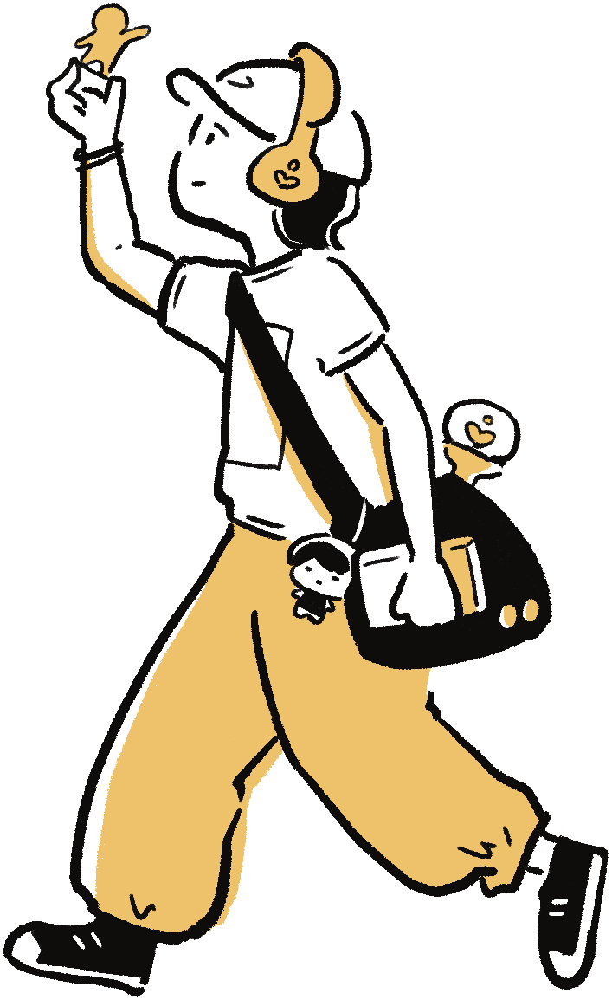
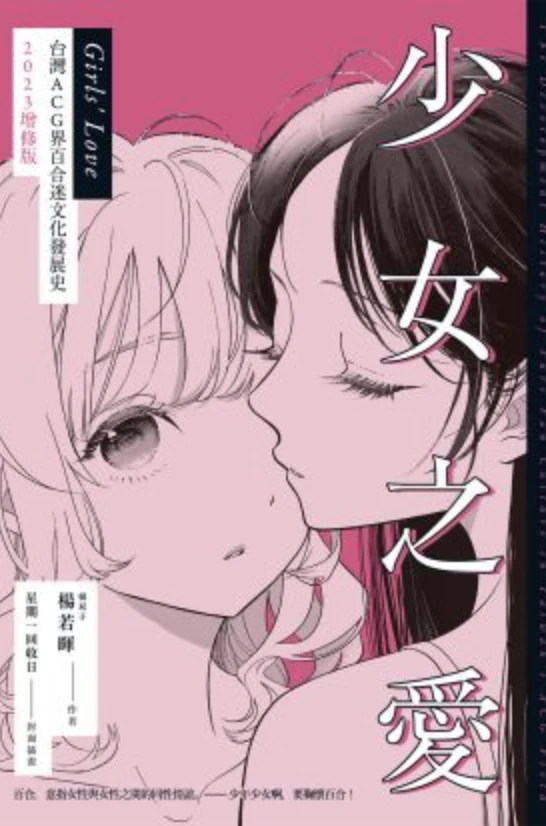
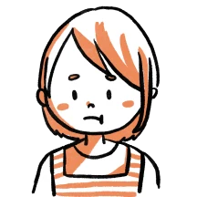
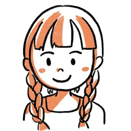
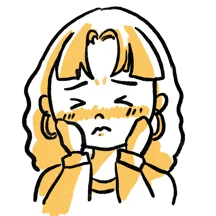
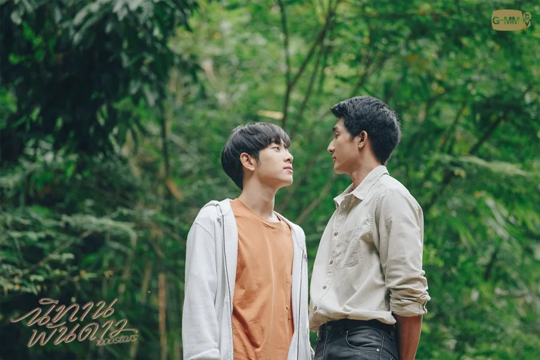
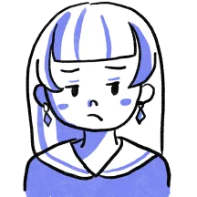
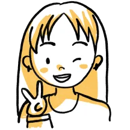
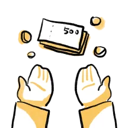

解碼 BL 與百合的
情感經濟
這份喜歡，如何形成情感、行動與消費

「我在 2025 年飛了泰國七次，總共花了 30 萬元」 一位追泰百的粉絲
「沈迷之後，我在某個月不小心爆買超過一萬五的漫畫，被低自制力嚇到，從此以後開始記帳。維力蒸煮麵是度過月底的好朋友」 一位喜歡百合漫畫的朋友
「被家人覺得說同樣的演唱會要看兩天，內容不是都一樣嗎？」 一位填答問卷的粉絲
「家人完全不能理解，為什麼我這麼喜歡看這些故事，他們覺得故事都是虛幻的」 一位填答問卷的粉絲
「因為追星才有契機認識到此生沒遇過的那種、能在價值觀跟精神世界上產生緊密連結的朋友。有了他們以後，外界眼光都是浮雲，因為知道自己已經得到無條件的包容。」 一位填答問卷的粉絲
「有信奉基督教的朋友認為 BL 違反世俗教義，勸我退 BL 圈但我沒有。」 一位 BL 讀者
「比較無力的是戲外或圈外，這個社會許多人對於整體 LGBTQ 文化仍然看不起甚至排斥」 一位填答問卷的粉絲
「為了偶像有出現而買日本雜誌，是花好幾百塊買一張紙的謎之行為」 一位填答問卷的粉絲
「因為喜歡上了他們，讓自己能夠知道自己愛人的模樣會是怎麼樣，可以毫無保留的付出給予愛，不僅是對喜歡的演員，對身邊的同好朋友們也是。」 一位填答問卷的粉絲
「雖然百合漫畫和現實女同感情不能等同而語，但我十分羨慕百合作品裡面 CP 真摯的感情，讓我更懂得自己對自身情感的需求。」 一位百合讀者
「我主要接觸的是百合，個人體驗覺得百合作品的情感特別細膩，而且能把現實可能沒有意識到的矛盾或問題點出來，讓讀者重新反思相似的經驗」 一位百合讀者
「在我還沒有接觸過百合作品、不知道女孩子之間也可以相愛之前，我曾經對我的人生以後只能找一個男的嫁了的這件事感到絕望，百合讓我發現我會對女孩子心動不是一件奇怪的事，我是可以喜歡同性的，且這並不是一件可恥的事」 一位百合讀者
「我認識到愛其實可以很健康也可以超脫性別」 一位填答問卷的粉絲
「因為這份喜歡讓我更勇敢相信自己，也因為他們認為學會愛自己比任何事情都重要」 一位填答問卷的粉絲
「由於 BL 作品的劇情會比其他劇種、少女漫等其他分類的作品更加講求無框架的情感描述，因此讓我對於純粹的愛這件事很動容，因為現實中幾乎找不到這樣的關係狀態或情境」 一位 BL 讀者
「在學校幾乎沒有人和我講話，但下課只要有了 BL 小說，真的快樂很多，沉浸在他們的世界時間很快就過了」 一位 BL 讀者
「我因為喜愛 BL，進而坦然面對自己的情慾。雖然我是異性戀，但並不會避談女性情慾，我覺得這是因為我長期接觸性與愛的議題，連帶讓我能坦率面對自己。」 一位 BL 讀者
「或許愛情不用依照既定的性別腳本，尋找突破框架的關係是可以被允許的。」 一位填答問卷的粉絲
「他們讓我暫時放下想死的念頭，讓我可以重新審視現在的生活有什麼地方是值得多花一點生命去享受」 一位填答問卷的粉絲
愛上後，命運的齒輪開始轉動……#
點擊卡片，看看這份喜歡，曾經讓粉絲們做出哪些改變
BL粉絲
百合粉絲
你可以從頭開始閱讀，也可以挑一個你最想知道的章節開始看：
我們是誰#
這次的專題，總共收集到 886 人份的資料，其中，以 BL 為主與以百合為主的填答者幾乎各半，也讓我們有機會進一步比較：著迷於 BL 與百合的情感背後，究竟有哪些共鳴，又有哪些差異？
50.1% 幾乎只看 BL 348 人、約七成看 BL 96 人
45.6% 幾乎只看百合 321 人、約七成看百合 83 人
4.3% BL 與百合各半，兩種愛都能平等共鳴的人
填答者中，有 771 人（87%）來自台灣，52 人（5.9%）來自於香港，其他則散落於日本、歐美、中國、馬來西亞以及其他地區。
BL 與百合，不只是年輕人的娛樂#
有許多年輕的主力，但也有人 40 歲之後，才開始享受這段沒有盡頭的快樂旅程。
40 多歲才開始喜歡 BL，一頭跌進泰腐就到坑底。喜歡追劇、喜歡CP間的互動、喜歡嗑他們遊走在友情、愛情之間的曖昧感。喜歡的CP拆了比失戀還難過，但不後悔曾經的喜歡，也感謝他們曾經帶給我的美好。為了聽懂他們的話努力學泰文，在經濟時間許可的範圍努力跟他們見面。喜歡追星的自己，好像重新活過來，人生變成彩色的。
而我自己在 BL 的實體見面會中，也的確看到很多不同年齡的朋友一起參與，甚至有媽媽帶著孩子一起來，也看過中年男子開心參與福利拍照。近幾年的受眾風貌，確實變得越來越豐富！( ⸝⸝•ᴗ•⸝⸝ )੭⁾⁾
註：BL 與百合受眾年齡分佈無顯著差異，故合併呈現整體輪廓。
你猜得到以下的答案嗎？
Q1猜猜看，此次調查中，BL 作品的粉絲大多是什麼性別？
正解是女性居多。444 位以 BL 為主的填答者裡，387 人（87.2%）是女性；男性 34 人（7.7%）。
Q2猜猜看，此次調查中，百合作品的粉絲大多是什麼性別？
正解一樣是女性居多。404 位以百合為主的填答者裡，344 人（85.1%）是女性；男性只有 22 人（5.4%）。
不論 BL 或是百合，女性皆是主要受眾#
BL 粉絲大多數是女性，這不是一件新鮮事。
但百合粉絲的女性受眾，可能比你想像中的還要多。
其實，在楊若暉（楊双子）《少女之愛》台灣ACG與百合迷文化發展史一書當中，早已提及百合的女性受眾為多數。他分別在 2011、2014 年曾執行過兩次百合迷調查。
女性讀者的比例，明顯都佔了大多數。

楊若暉（楊双子）著
同樣喜歡描寫同性親密關係的作品，公開喜好的程度卻大不同！！#
BL 粉絲：感到自由開放，對台灣環境的驕傲與坦然
隨著時代風氣的轉變與討論度提升，BL 粉絲越來越能毫無掩飾地在生活圈中分享自己的愛好，並將其視為一件健康、值得驕傲的事。
我喜歡我的國家，因為我在臺灣才能公開自由的說我喜歡BL。我也從不認為喜歡這些是什麼很丟臉的事。有人喜歡少女漫畫，喜歡裡面充滿溫暖的愛；而我也是，就只是漫畫主角的性別不同，不應該被貼標籤或被恥笑。
百合粉絲：不確定他人如何理解，選擇先在安全圈中做自己
相較之下，百合粉絲在公開表達喜好時，整體顧慮可能較高。外界有時會將「觀看百合」與個人性向連結，這可能影響百合粉絲是否選擇公開分享這項興趣。

大家會覺得我看百合所以我也喜歡女生……雖然我也意識到自己可能是雙，但還是不想被別人說，畢竟我沒有公開承認過，目前還沒搞懂這種感覺是什麼。
為何著迷#
喜歡 BL 跟百合，就只是喜歡看帥哥們、美女們貼在一起嗎？#
在很多的台灣媒體報導當中，BL 劇經常被描述成一種感官上的娛樂。例如：「小鮮肉濕身相貼」、「激情床戲」、「粉紅泡泡」等等。
而百合劇，則因為在台灣見面會的接機人潮、越來越水漲船高的票價而引人注目。
然而，在這次的調查當中，我發現不論是對於 BL 或是百合的愛，絕對不是只有刻板印象之下，純粹的感官娛樂。背後可能承載著更為深刻的情感與現象：
1. 拋開傳統性別角色，想像更平等的愛情#
在主流的異性戀（BG）的浪漫故事當中，偶爾會隱含著男強女弱、霸道總裁、男性支配女性的情節。BL 與百合作品，則暫時移除了「男女」這組既有的性別角色分工，讓觀眾有機會觀看一段不必預設誰應該強勢、誰應該被保護的親密關係。
看 BL 劇可以不用帶入自己的性別，不會有 BG 劇常有的父權主義或大男子主義問題
女性同性之間就生理上沒有原始的支配與被支配、穿透與被穿透的不平等關係，我喜歡看平等的感情
如果是熟悉 BL 文化的人，可能會想到，那麼 呢？擁有「強制屬性」的 CP 又怎麼看？ABO 世界觀是一種常見於 BL 創作的架空設定，將角色劃分為 Alpha、Beta、Omega 三種第二性別，藉此重新建構權力、性別與情感關係。
過去對於 BL 作品閱讀的討論中，常出現一種解釋：對於女性來說，欣賞 BL 是一種拉開距離的安全觀看，不易將自己帶入角色本身，更像是一個「旁觀者」。
而 ABO 設定、強制屬性、其他不在現實生活當中看到的互動關係，在二次元的世界當中，反而成為女性安全觀看權力、親密關係流動的實驗場。
讀者可以在裡面感受：
「如果男性間，擁有階級制度，角色如何跨越階級、世俗風氣，排除萬難在一起？」
「如果角色遭遇極端待遇，他會如何應對？會長出什麼樣的能力與性格？」
「我自己，又希望怎麼被愛、如何愛其他人？」
這就是這類型作品，散發著幽微光芒的其中一種魅力。
2. 看見真實的自己，釐清性向與情慾流動的可能性#

多年前和朋友一起看百合，意識到自己原來也會對女性產生戀愛方面的情感，陪伴我釐清自己的性取向。
透過觀看 BL 或百合作品，我們看見主角如何在故事中被另一個人接納：即使暴露自己的缺點，仍然有人願意理解與包容。這讓投身於故事中的我們認為，無論如何都值得被愛，也打開了我們對於愛情可能性的想像。

第一部很喜歡的劇是《千星傳說》（泰國 BL 劇），我不是很敢於直接說出心情的人，我看到兩個主角都是像我這樣隱藏著情緒，默默的陪伴對方的人，而這樣的陪伴對方也會感受到，像我這樣害羞的人不需要強迫自己，我依然有可能得到像他們一樣深情的幸福。

泰劇《千星傳說》海報與劇照，圖片來源：GMMTV
除了 BL 劇之外，近期的泰國百合劇，也終於讓女同志劇迷們，不再只有看到為了社會現實、家庭反對而被迫與愛人分離，而是透過明亮且溫暖的日常劇情，告訴觀眾，女生和女生間的愛情本身就是如此美好的一件事。
BL 讓人觀賞另一種愛、百合更常讓人看見自己#
接下來，讓我們把作品類型和性別、性傾向做個交叉分析，有趣的現象出現了。
BL 受眾中，最大的群體是異性戀女性。男同志（5.4%）也會看，但他們幾乎只看 BL、不看 GL。
百合受眾則以女同志、雙性戀女性為主，在這次的開放式回答中，我觀察到粉絲較常在故事中找尋自我、擁有自身的投射。在本次的樣本當中，男性合計不到 6%，呈現出非常明顯的女性受眾輪廓。
欣賞 BL 作品，對於女性粉絲來說，是一個暫時把自己遠離傳統社會角色的時光，我們可以盡情在裡面享受各種可能的親密，它可能是純情清水、可能是炙熱衝動，在這當中安全體驗脫離日常框架的關係。
另一方面，百合對許多女性粉絲來說，可能是：
我第一次在浪漫故事裡，看見一個我或許可以待在那裡的位置。
許多百合粉絲，從小看了很多異性戀主流故事長大，雖然也能享受在其中，但總覺得有哪些不足。
直到看了百合故事之後，自己內心某些深藏已久的情感，才終於找到了名字。
兩種類型都在探討「我與愛情的關係」，但一種是傾向拉開距離的觀看，一種則更常從故事中映照自身。
二次元，情感在作品世界得以凝結，三次元，則繼續往現實生長#
粉絲對於二次元和三次元的喜好，並非只是媒介上的不同，如果說，二次元讓人愛上的是角色與故事本身，那麼三次元，則是延伸到現實世界中的發展。
漫畫和小說，不受真人影像的限制，在創作上得以透過架空的世界觀，帶出觀眾更多延伸的想像空間。
再者，因為不像真人影劇有「演員不再合作」的那天，角色在被創作出來之後，得以在作品的世界當中，獲得一種形式上的永生。因此，二次元角色的情感依附，能夠讓粉絲更為安心且長久。
長期閱讀虛構的作品，也會深度改變我們如何理解關係與性別。
我覺得他們讓我更了解「感情」有各種形狀。一般可能會認為有親情、友情、愛情三大關係性，但藉由這些故事我覺得感情就像黏土一樣，會因為個人的情感軌跡和外在事件，變化出成千上萬的形狀，我自己對於現實世界中的情感的包容度，也漸漸變得多元且彈性。
一位喜歡 BL 漫畫的粉絲另一方面，在三次元的追星文化，則把情感從作品延伸到現實世界：粉絲愛的不只是劇中的角色，同時也會是演員本人，以及兩位演員在劇外共同建立的一段長期關係。
因此，社群、綜藝、見面會等「售後服務」，演員的性格、價值觀、兩人如何在劇外共同度過現實低谷、互相帶領成長，就成為粉絲的關注焦點之一。
我為了有一天能飛到她們的國家去見她們（FreenBecky），把自己的生活過的更好了，也因為她們有說過：「愛自己就永遠不會受傷」讓我領悟，要先好好愛自己才能有餘力愛別人。
不過演員 CP，可能因為個人演藝發展而「解綁」，這也成為了很多追星族最害怕的事件。因此，這種不知道能否持續的不確定性，讓更多粉絲把握當下，用盡全力的朝向自己的愛所奔去，參與各種實體活動。
當粉絲們愛的已經不限於「劇情本身」，而是兩個在現實當中仍持續互動的人，CP 的經營，就成為重要的一環。
我們所說的 CP 感，究竟是在感受些什麼？#
在三次元的真人影劇中，除了劇情好不好看之外，粉絲會特別感受兩人之間所謂的「CP 感」，而 CP 感究竟是怎麼一回事？它是一種神秘的玄學嗎？尤其在泰國 BL、百合影劇產業中，以雙人組合為核心的 CP 經營，早已發展成成熟的商業模式。
在這一次的調查當中，我回顧了粉絲們的回答，加上個人的觀察，深度解析什麼是所謂的 CP 感。
許多粉絲表示，CP 感是一種無形的氛圍，當兩個人站在一起的時候，好像就有什麼無法言說的默契發生在兩人之間——
- 眼神交會的瞬間
- 不經意的肢體觸碰
- 對話拋接的默契
有時候過度直接的調情、或是毫無阻礙的親密接觸，反而會抹殺掉這份感覺，因為它失去了讓人想像的空間。有一派粉絲所著迷的，是兩人靠近時候不知所措的羞澀、太在乎對方產生的彆扭，或是那種「友達以上，戀人未滿」的拉扯感。充滿張力的「留白」，能讓觀眾產生強烈的探究感與心動感：
- 「他們感覺一定有些什麼」
- 「A 從來沒有對其他人做過這件事」
- 「他們今天活動感覺特別開心，一定是最近兩人發生了什麼」
真正讓粉絲投入的，通常不是單次的親密互動，而是兩個人共同經歷過什麼：困境中互相扶持、只有兩人懂的快樂與低谷，以及一路陪伴對方成長的軌跡。
但更多互動，不等於更多 CP 感。
粉絲同時畫出了一條很清楚的紅線：拒絕「人工糖精」。
當媒體或官方為了炒作，刻意要求演員製造肢體接觸，粉絲未必會因此感受到更多「糖」，反而可能察覺其中的不自然。尤其當演員明顯感到不自在時，這類操作也容易被理解為對腐女受眾的刻板想像：彷彿只要兩個男人靠得夠近，粉絲就會買單。

我希望台灣的創作者們不要再因為流量，問出的那些博人眼球的提問或者要求的肢體接觸，就認為所有腐女想看的內容只有那些。
粉絲想看的不是「親密行為」本身，而是那些行為背後，有沒有一段值得相信的關係。
也就是說，粉絲其實在每一個場合，都在抓取細節線索。
一個眼神、一個特別的稱呼、記得對方日常習慣的脫口而出，都會被放進粉絲的腦中所累積的資訊中，重新再度被解讀。
而且這些解讀行為，會忍不住讓人想要找其他人一起討論，尋求在社群上嗑同樣 CP 粉絲的共鳴。
他們所帶來的化學效應讓我覺得他們不一定是真的情侶，但他們一定也是非常非常要好的朋友甚至可以說是家人，我所期待的就是他們可以互相一直帶領對方成長。
所以，CP 感不僅僅是讓兩人的長相、氣質看起來很配（這些當然也重要），更是粉絲群體在長期觀察兩個人間的微小訊號，逐漸建構出一條只有長期觀察的粉絲，才能看懂的那條關係線。
當情感形成經濟#
「很多時候，看似是從買一個小東西開始的。」
手上拿著限定版的小卡，上面是最喜歡的本命 CP，仔細端詳它的特殊工藝，銀色的粒子反射著光芒，小小的細閃耀眼奪目。
接連而來的是，限定收藏版的畫冊、雜誌特裝，還有那些必須要在第一週購入才有的獨家特典，回過神來，不知不覺房間的角落，已堆滿了帶來幸福、同時也侵蝕居住空間的周邊。
摸摸乾癟的錢包，再摸摸月底同樣乾癟的肚皮，最近都凹陷而營養不良。
這樣的鬼故事也曾經發生在你、或是你身邊的親友身上嗎？
為了什麼而花錢？又花了多少錢？#
如下圖所示，不論 BL 或是百合，粉絲願意掏錢、付出心力，最主要的理由並不是商品本身，而是背後承載的情感。
這次調查當中，粉絲在每個月平均都花多少錢：
新台幣／每月
新台幣／每月
BL 粉絲平均每個月花新台幣 1,821 元，百合粉絲平均每個月花新台幣 1,271 元，但這不代表「BL 粉絲就是比百合粉絲更會花錢」。進一步拆開消費型態後，我發現，真正拉開差距的可能不是題材類型，而是粉絲主要參與的是二次元，還是真人影劇與追星活動。
此次參與調查的百合粉絲，在比例上僅 14.4% 有追劇追星，BL 粉絲則是 26%。若以 BL 劇與百合劇的發展來看，BL 劇已成熟多年，而百合劇仍在新生的成長期中。
問卷中也有不少朋友回饋，期待除了泰國百合劇之外，有更多的台灣百合劇能夠百花齊放。
「希望台灣也可以有更多元的百合劇誕生，而不再只是戲劇中的配角，百合劇有很多故事可以說🥹」
「台灣的百合作品真的少，受眾群真的小；覺得好難過🥲」
「台灣是一個相較於其他地域更包容、更自由的環境，此類創作還是太少，請更勇敢的讓我看見獨屬於台百的浪漫。」
「希望台灣有更多百合的作品出現」
「台灣需要更多GL作品！」
「希望台灣的GL作品可以更多，絕對支持🙏😭」
「需要更多百合作品!!!!跟BL比起來 太少了不夠吃」
「希望（沒有審查的）華語百合圈可以更加壯大！！！」
「拜託百合作品多一點啦（哭」
「想看更多的百合作品！！！」
「希望台灣百合可以繼續崛起✋😭🤚」
「更多百合作品8拖了」
「台灣是一個能自由創作的國度，願我們能打造一個最棒的百合國度。」
「台灣的百合一定會越開越多的！謝謝你們的努力！」
二次元的投入行為：用新台幣下架喜歡的作品、支持正版#
我觀察到，二次元的粉絲在經濟獨立之後，會發展出以下的消費模式，他們的消費動機與真人追星（買機票、見面會門票）非常不同，主要集中於以下面向：
1. 實體收藏能收就收
即使看了電子書，遇到本命作品依然會選擇「紙電雙收」，並跨海尋找代購買日版特典、立牌。

にやま老師的《既然你都說到這地步了我就上你吧》，開始買日文特典跟立牌。
其實我是比較喜歡買完結作品的。但因為太喜歡了所以在 BW（BookWalker）跟亂搭上買連載，然後為了想買日文新續集特典加入代購🤣 台灣作家則是阿靡老師吧，因為醜貓醜鵝太卡哇伊就買立牌；咖廳初體驗第一次，也是去桂老師的；也是太喜歡艸肅老師的《瀲屍》所以發在自己的脆上……，特別喜歡的作品紙電雙收！
2. 支持正版、支持作者成長
粉絲非常在意創作者，是否能分到足夠的金錢，因此會用「新台幣下架作品」的爆發性消費，來支持正版。尤其，台灣是屬於創作自由的國家，對喜歡作品的粉絲來說，可以用金錢來支持台灣作家作品，更是一種驕傲的使命感。

如果有 100 個像我一樣拿出點小錢支持作者的人，世界會變得更好。
也有粉絲分享，因為喜歡的老師，希望盜版漫畫消失，從此以後點燃自身的版權意識。
漫畫《課金派戀愛》的作者 HOM 發文說新年願望是盜版漫畫消失，從此就致力於支持正版。
品質好的經典作品，讀者選擇大力的買買買，支持實體與數位版本的收藏，背後的核心，都是希望自己能為這個產業盡一點綿薄之力，讓作品能夠陪伴自己更久的時間。
追星的投入行為：花錢把握瞬間即逝的美好，每次相見都是一期一會#
相較於二次元活動，追星一樣會購入實體周邊，不過畢竟是因為喜歡上演員本人，所以會盡量想要用盡全力，把握親眼能見到對方的每一次機會。
也因為演員的演藝事業和安排，並不是身為粉絲的我們可以預測的，再加上，不時會耳聞到哪一家的 CP 解綁、或是演員因為個人因素無法繼續出現於螢光幕前，也因此粉絲只要是在當下擁有足夠的愛，就願意花下大筆經費，能盡量與心中的愛靠近。
演唱會盡量能去就去，一定要一直支持他們不讓自己後悔，因為不知道這樣的關係能維持到什麼時候。
不論是二次元或追星的消費，背後的共同點，都是為了要感謝、支持產出這些美好事物的人，讓我們的生命開始有了些改變。
粉絲的親身投入與再造，成為產業鏈的「生產者」#
粉絲不只投入金錢，也投入大量時間與能力，逐漸從內容的消費者，成為 IP 生態中的共同生產者。不論是動漫圈的同人創作、或是粉絲圈的飯拍影片、剪輯影片再製，其實都是粉絲的再造內容，再吸引更多的人進到這個圈子當中。
「推坑」一方面是在展示自己的品味：包含，我如何理解、欣賞這個 IP，另一方面，也讓粉絲主動成為內容的傳播節點，把作品帶向原本接觸不到的人。
而我發現，擁有以下特質的作品，更容易讓粉絲推坑給朋友：
特質
心目中的神作，超越了僅僅是娛樂的特質
粉絲心目中的神作，讓人願意一刷再刷，往往超越了單純的娛樂消遣，包含以下特徵：引起強烈的情感共鳴、角色人物解讀空間多、不只是為露而露的情慾戲，甚至能在角色當中看見投射自身的經驗。
品味
分享高品質的內容，展現自己個人喜好品味
不論是二次元作品，或是真人影劇，若作品本身極具美學性與情感深度，推薦此類型作品給朋友時，粉絲更像是在展現品味，並為喜歡此作品感到驕傲。
受眾圈
打破既有受眾圈，降低推廣門檻
不論對方原本是否接觸過 BL 或百合題材，高品質的內容本身就能跨越題材的刻板印象與限制。這賦予了粉絲向非圈內人推薦的信心，將原本不看這類作品的親友拉入坑中。
而推坑是有程度差別的。
一般程度的推薦，是希望對方也能獲得相同的樂趣，但當一部作品重要到足以代表自己的品味、價值觀，甚至替自己說清某些難以言喻的感受時，「推坑」也成了一種自我表達：
「我希望你也能看看，也希望你能理解，這個作品對我來說為什麼重要。」
懷抱著這樣的心情，人與人之間，得以建立更深刻的連結。
粉絲經濟不只是金錢，是多種資源的投入#
仔細分析了一下整體的消費模式，我發現針對「粉絲經濟」這一塊，不能單純看表面上的消費，而是要去看整體所付出的資源：
吸引更多人入坑，獲取更多注意力
粉絲的情感經濟，除了花錢消費支持之外，更是為了這些喜歡的作品、演員們，開始改變自己「資源分配」的方式。投入時間與注意力、為了愛第一次獨自出國、投入同人創作產製、將更多朋友推入坑中。
願意一次次消費、也願意持續靠近。
結語：展現真實情感，連結粉絲的心#
在探索這個主題的過程中，我不斷在思考：
持續曝光、宣傳、辦活動，就算是在和粉絲培養關係了嗎？
整理這次調查、朋友們給我的想法，再加上自己長年看作品與追星的經驗後，我心中浮現了，或許這才是重點的事：
每一次新的接觸，有沒有讓粉絲對作品、角色或演員，多理解了一點什麼？
可能是，我原本沒有注意到某個細節，直到創作者談起，才重新理解它背後的巧思、也可能是，我原本只覺得兩位演員演得很好，直到看見幕後花絮，才知道這場情感張力與流動的戲，是如何經過一次又一次排練形成的。
我們會開始用不同的角度重看某場戲，重新理解角色與角色、演員與作品之間的關係，甚至忍不住找朋友討論：「原來這裡還藏有這些細節。」
另一方面來看，如果每一次出現，都只是在重複相同的人設、相同的 CP 形象與相同的宣傳訊息，那麼增加的可能只是曝光的次數，而不一定能增加理解的深度、加深情感的連結。
回到這份調查本身。最初和身邊朋友聊起這個計畫時，很多人都跟我說：
「BL 和百合的粉絲差很多，看的東西根本完全不一樣！」
沒錯，這份研究也讓我看見，兩邊的受眾組成、觀看位置、喜歡的關係，乃至投入的方式，都有自己的樣貌。
但我從一開始更想知道的其實是：
「這些不同類型的愛，背後有沒有一些相似的情感？」
而我在爬梳大家的回答時，發現這些喜歡，不只改變了我們的興趣、消費習慣，甚至進一步影響到了朋友圈、重新認識自己、看見自己不同的面貌。
這份喜歡，究竟可以把我們帶到多遠呢？
這是在下一集連載中，我想繼續追問的問題，謝謝你看到最後🫶
BL與百合研究系列專題#
從情感如何形成經濟，到喜歡如何改變人生，再到我們如何成為不同樣貌的粉絲。其他內容，預計在2026下半年上線。
- 00已發布 粉絲在意哪些劇情設定？ BL與百合作品，粉絲在意什麼劇情設定
- 01NOW READING 解碼情感經濟 從 886 位粉絲，看見喜歡如何變成投入。
- 02製作中 喜歡如何改變人生？ 看見 BL 與百合作品如何進入一個人的生命。
- 03製作中 粉絲圖鑑 分析粉絲的「品種與生態」
調查方法#
2026/03/06 – 04/05 線上問卷，回收 886 份有效樣本。
選擇題＋開放式回答。
IG、Threads 與親友、同好社群協助擴散。
人工＋AI 輔助分析，資料皆已去識別化。
關於我#
在海香草這個粉絲身份之外，我也是一位獨立接案的體驗研究分析師，名字是 Mei。
擁有約 7 年以上的研究經驗，曾經替許多企業進行過訪談調查，包含：金融、娛樂文化、教育、政府、電商⋯⋯多種跨領域。
而這次我終於可以為自己、為這個充滿愛的群體，做一個專屬的研究。
你可以在這裡找到我：
- Instagram：海香草｜讀劇巧思
- 網站：Mei | 體驗策略顧問
若你有任何想法，不論是內容轉載、講座邀請、研究調查，都歡迎來信聊聊。